Місто України, обласний центр Чернігівської області.
Одне з найдавніших міст України, засноване в кінці VII століття при впаданні річки Стрижень у Десну. Упродовж своєї історії часів Середньовіччя й Відродження місто було одним із головних осередків політико-економічного й соціально-культурного життя українців. Місто славиться своїми пам'ятками часів Русі й Чернігівського князівства, а також Гетьманщини й козацького Чернігівського полку.
----------------------------------------------------------------------------------------------------------------------------------------------------------------------------------------------------------------------------------------------------------
Назва▲
За переказами і легендами, Чернігів отримав назву на честь першого місцевого князя — Чорного. На сьогодні відомо багато різних легенд і переказів пов'язаних із назвою міста. За одними з них, назва міста пов'язується із ім'ям дочки цього ж князя «Чорного», яка викинулася з вікна княжого терему, щоб уникнути наруги з боку ворогів, які стояли облогою навколо міста. Інші легенди кажуть, що Чернігів завдячує своєю назвою темним, дрімучим, «чорним», лісам, які з усіх боків оточували місто. Також існує версія про велику кількість «серн», тобто сарн, які населяли околиці цієї місцевості. І ніби, з часом, назва міста змінилася з Сернігів на Чернігів.
----------------------------------------------------------------------------------------------------------------------------------------------------------------------------------------------------------------------------------------------------------
Символіка▲
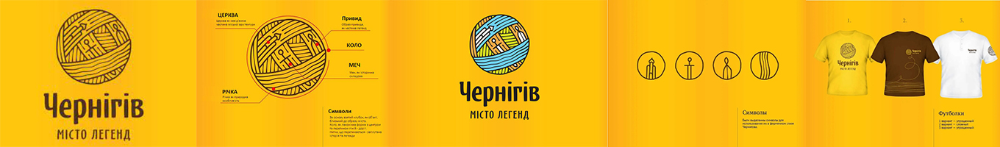У Чернігова є свої герб, прапор, гімн і туристичний логотип, які відображають статус міста. Герб Чернігова затверджений 1 грудня 1992 року Чернігівською міською радою. Він складається зі срібного щита, на якому розташований чорний коронований орел із золотим дзьобом і лапами. Орел тримає лівою лапою по діагоналі золотий хрест. Базою для герба став герб Чернігова і всієї Чернігівщини XVIII—XIX століть. Прапор Чернігова затверджений 26 червня 2008 року Чернігівською міськрадою. Прапор являє собою прямокутне біле полотнище співвідношенням 2 до 3, у центрі якого розташований чорний одноголовий коронований орел, який лівою лапою тримає золотий хрест. Автор прапора — заслужений діяч мистецтва України — Борис Дєдов. За задумами художника, прапор відображає історичні епохи розвитку міста від козацьких часів і містить основний елемент герба Чернігова. Прапор використовується на всіх офіційних міських заходах. Гімн Чернігова, затверджений у 2010 р. Був визначений за підсумками загальноміського конкурсу, що тривав більше року. Найкращий зразок гімну міста обраний із 20 заявок. Авторами Гімну територіальної громади Чернігова є композитор Анатолій Ткачук і поет Іван Буренко. Де-факто девізом Чернігова сьогодні є гасло «Чернігів — місто легенд», він відображений на туристичному логотипі, розробленому в 2010 р. Процес розробки візуальної складової туристичного позиціювання Чернігова розпочався з визначення відмінних рис міста, його унікальностей: старовинні церкви і собори періоду, коли Чернігів був стольним градом могутнього князівства, гармати на Валу, Десна, і головне — легенди, фактично в кожному куточку міста своя легенда. Після тривалого широкого обговорення досить привабливих проєктів зупинилися на логотипі у вигляді клубка (переплетення подій минулого), між нитками якого проступають храм, меч, річка і чернець-привид.
----------------------------------------------------------------------------------------------------------------------------------------------------------------------------------------------------------------------------------------------------------
Пам'ятки історії та культури▲
- Княжої доби:
- Дитинець
- Спасо-Преображенський (Спаський) собор (XI ст.)
- Борисоглібський собор
- Іллінська церква (XII ст.)
- Успенський собор (XII ст.)
- Єлецький монастир (XII ст.)
- П'ятницька (св. Параскеви) церква
- Курган Чорна могила (X ст.)
- Кургани Безіменний і Гульбище
- XVII—XX століть:
- Чернігівський колегіум (1702)
- полкова канцелярія — дім Лизогуба (кінець XVII століття)
- cобор Троїцького Іллінського монастиря (1679—1689)
- Катерининська церква (1715)
- Будинок театру (1958, архітекти Д. Фрідлін, С. Тутученко та інші)
- Меморіальний комплекс Слави воїнів, партизан та підпільників та могила невідомого солдата
- Будинок колишньої губернської земської управи
----------------------------------------------------------------------------------------------------------------------------------------------------------------------------------------------------------------------------------------------------------
Міста-побратими▲
- 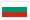 Габрово, Болгарія
- 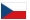Градець-Кралове, Чехія
- 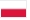Ряшів, Польща
- 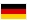Меммінген, Німеччина
- 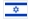Петах-Тіква, Ізраїль
- 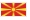Прилеп, Північна Македонія
- Огре, Латвія
- Тарнобжег, Польща
1 березня 2016 року Чернігів розірвав побратимські відносини з російськими містами брянськ, митищі, ростов, псков через агресію російської федерації проти України. 31 травня 2022 року місто розірвало угоду про партнерство та співробітництво з білоруським містом гомель через участь білорусі у вторгненні рф на територію України.
----------------------------------------------------------------------------------------------------------------------------------------------------------------------------------------------------------------------------------------------------------
Галерея Чернігова▲
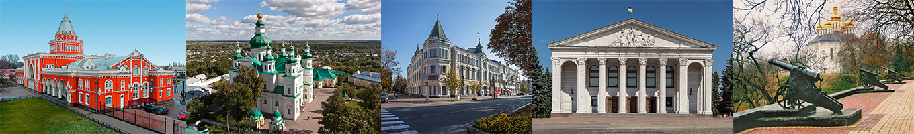 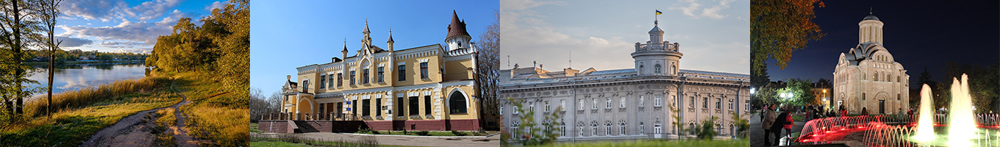 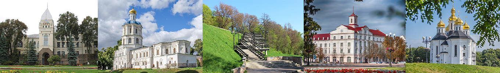 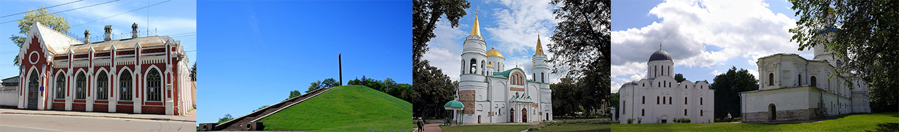
================================================================================================================================================